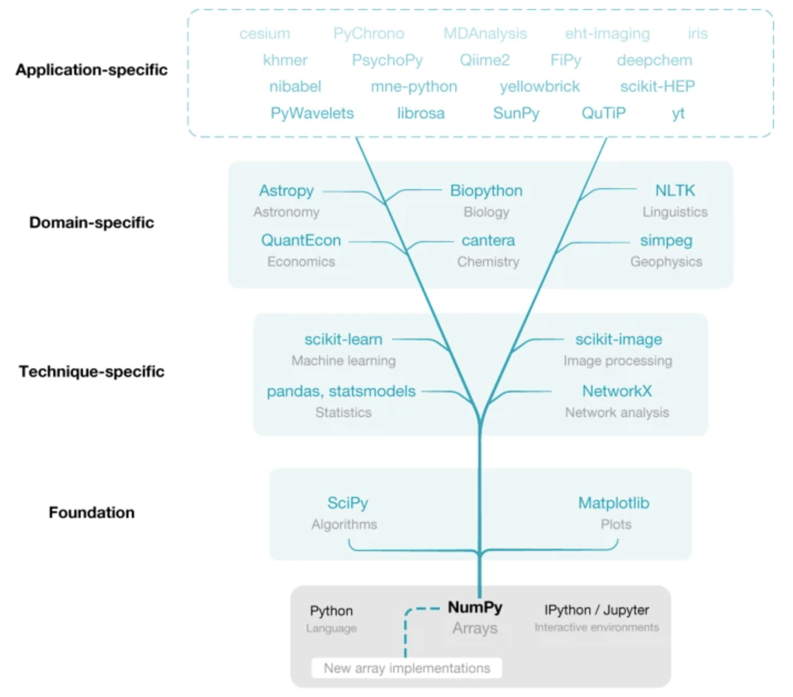
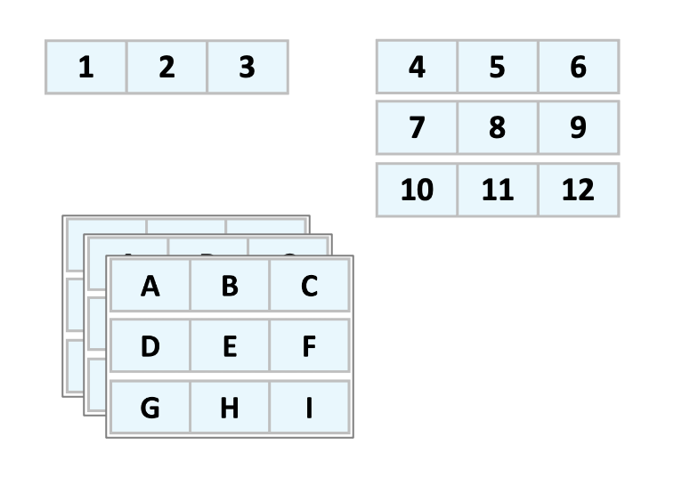
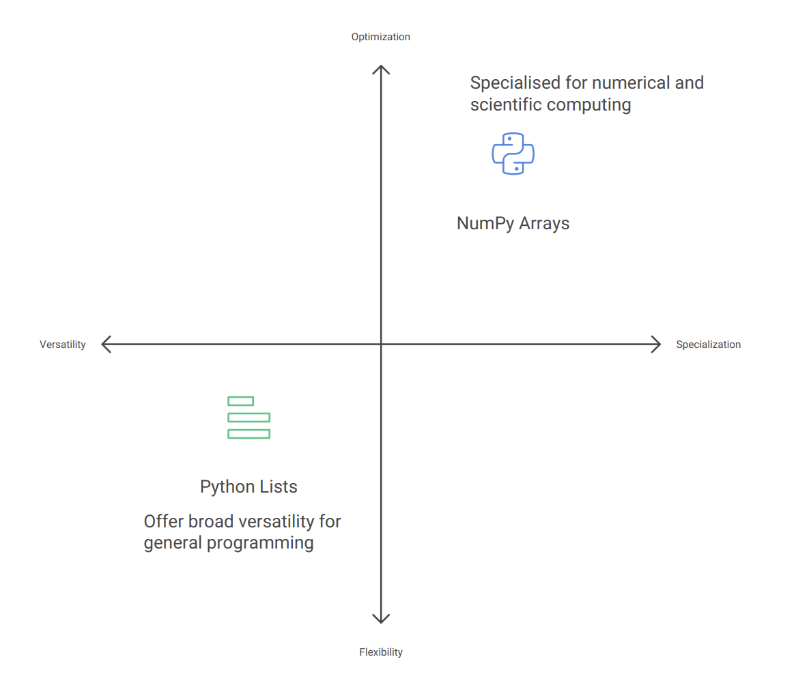

Data Analysis for Bioinformatics: NumPy and Pandas
Prerequisites
Programming Fundamentals in Python
Basic Python syntax and data structures
Functions and control flow
File handling in Python
Experience with Python IDEs and Jupyter notebooks
Basic Biology Knowledge
Fundamental concepts in molecular biology
Understanding of DNA, RNA, and protein structure
Basic genomics terminology
Familiarity with common bioinformatics file formats (FASTA, FASTQ)
Who is the course for?
Bioinformaticians and genomics researchers who want to enhance their data analysis capabilities by mastering NumPy and Pandas for efficient processing of genomic datasets
About the course
Overall Course Objective
By the end of this course, students will be able to effectively utilize NumPy and Pandas libraries to manipulate, analyze, and process complex numerical and tabular data in Python, demonstrating proficiency in advanced array operations, data structures, and data manipulation techniques. Additionally, students will apply these skills to real-world bioinformatics problems, gaining practical experience in genomics data analysis and handling.
Specific Learning Objectives
After completing the NumPy section and hands-on exercises, students will be able to:
Explain the purpose and advantages of using NumPy in scientific computing and data analysis
Create, manipulate, and efficiently implement NumPy arrays through advanced techniques including indexing, sorting, splitting, vectorized operations, and broadcasting
After completing the Pandas section and hands-on exercises, students will be able to:
Understand the relationship between Pandas and NumPy, and effectively use Pandas Series and DataFrames for data analysis
Perform advanced data manipulation techniques including indexing, filtering, handling missing data, and combining DataFrames through merging and concatenation
Overall time schedule
Numpy for Bioinformatics |
3 Hours |
Pandas for Bioinformatics |
3 Hours |
Numpy for Bioinformatics
Overall objectives
Objectives
Understand the fundamentals of NumPy and its importance in scientific computing and bioinformatics
Develop proficiency in creating, manipulating, and performing operations on NumPy arrays
Apply NumPy’s computational capabilities to solve common bioinformatics data manipulation tasks
Compare the efficiency and syntax advantages of NumPy versus standard Python for numerical computation
Specific Objectives
By the end of this workshop, participants will be able to:
NumPy Foundations
Explain NumPy’s purpose and advantages over standard Python lists
Describe how NumPy leverages contiguous memory allocation for improved performance
Array Creation and Structure
Create NumPy arrays of different dimensions from Python lists and other data sources
Generate arrays using built-in functions like
arange(),zeros(),ones(), andrandom.random()Examine array attributes such as
shape,ndim,size, anddtype
Data Types
Contrast Python and NumPy data types for numerical computation
Select appropriate NumPy data types for optimizing memory usage and computational precision
Understand and manage type coercion in array operations
Indexing and Selection
Access and manipulate array elements using basic indexing
Extract subsets of data using slicing operations in multiple dimensions
Apply boolean masking and advanced filtering techniques to arrays
Array Operations
Reshape and restructure arrays to better match analytical needs
Combine arrays using concatenation and splitting operations
Generate descriptive statistics using NumPy’s built-in functions
Vectorization and Performance
Implement vectorized operations to replace traditional Python loops
Apply broadcasting to perform operations between arrays of different shapes
Optimize calculations for working with large biological datasets
Time schedule
Introduction to NumPy |
20 mins |
Break |
5 mins |
NumPy Data Types |
30 mins |
Break |
10 mins |
Basic Indexing and Slicing |
20 mins |
Boolean Masking and Filtering |
20 mins |
Break |
5 mins |
Essential Array Operations |
20 mins |
Break |
10 mins |
Vectorized Operations |
20 mins |
Exercises - Q&A |
20 mins |
Introduction to NumPy
Objectives
What is NumPy and why it’s important for bioinformatics
Performance advantages over Python lists
Foundation for other scientific libraries
Time
15 - 20 Minutes
What is numpy?
NumPyis short for “Numerical Python”Core python library for scientific computing
Useful for processing large quantities of same-type data
Foundation for:
Data manipulation, analysis and visualization libraries (
Pandas,Matplotlib,scipy)Machine learning libraries (
scikit-learn,TensorFlow,PyTorch)
NumPy operations are written in compiled C, significantly speeding up mathematical operations

Why NumPy is Essential for Bioinformatics
Bioinformatics involves processing and analyzing vast amounts of biological data, from genomic sequences to protein structures
NumPy’s efficient N-dimensional arrays allow for fast and memory-efficient processing of these large datasets
C-optimized operations: NumPy’s compiled C backend makes processing of big-data feasible without having C programming knowledge
Reduced memory footprint help optimize the big-data processing: Accelerating Key Bioinformatics Tasks 100-fold by Improving Memory Access
Run statistical analysis/operations using Biological Data effectively (low barrier to entry)
Numpy is essential for Python-based machine learning applications on biological datasets
Discussion
In essence, NumPy bridges the gap between high-level Python programming and the performance requirements of modern bioinformatics, making it possible to analyze the increasingly large datasets generated by modern biological research techniques.
NumPy Arrays vs Python Lists
Lists are data structures used to store collections of elements
NumPy arrays enforce a single data type for all elements
Benefits of NumPy arrays:
Homogeneity removes need for type checking during operations
Contiguous memory allocation (faster than Python’s scattered storage)
Vectorization allows operations on entire arrays without loops
Rich set of mathematical functions and operations

Creating NumPy Arrays
Demo
1D Arrays from lists
import numpy as np
# Create from list
py_list = list(range(1,5))
np_array = np.array(py_list)
print(np_array) # Output: array([1, 2, 3, 4])
2D Arrays (matrices)
# Create a 2D array
rows, cols = 3, 4
list_of_list = [[j for j in range(cols)] for i in range(rows)]
np_array = np.array(list_of_list)
print(np_array)
Output:
array([[0, 1, 2, 3],
[0, 1, 2, 3],
[0, 1, 2, 3]])
Creating arrays from scratch
Demo
# Range of values
np.arange(1, 10, 2) # Output: array([1, 3, 5, 7, 9])
# Arrays of zeros
np.zeros((2, 2)) # Output: array([[0., 0.], [0., 0.]])
# Arrays of ones
np.ones(5) # Output: array([1., 1., 1., 1., 1.])
# Random arrays
np.random.random((2, 2)) # Random values between 0 and 1
Examining numpy array structure and storage
NumPy arrays come with several attributes that provide important information about their structure and data storage.
Attribute |
Description |
Example |
Purpose |
|---|---|---|---|
|
A tuple of integers representing the size of each dimension of the array |
(3, 4) (2D array with 3 rows and 4 columns) |
Understands the layout and number of elements within the array. |
|
An integer indicating the dimensionality of the array (number of dimensions) |
2 (for a 2D array), 1 (for a vector) |
Clarifies how many axes are used to access elements. |
|
An integer representing the total number of elements within the array |
12 (for a 2D array with shape (3, 4)) |
Provides a quick way to determine the total number of elements. |
Exercise: NumPy Array Creation Exercises
Exercise 1: Creating Arrays from Scratch
In this exercise, you’ll practice creating NumPy arrays using different built-in functions.
Tasks:
Create a 1D array containing integers from 5 to 50 with a step size of 5 using
np.arange().Create an array of 8 evenly spaced values between 0 and 1 (inclusive) using
np.linspace().Create an array of 10 random integers between 1 and 100 using
np.random.randint().Create an array of shape (3,3) filled with the value 3.14 using
np.full().
Expected Output:
# After task 1
array([ 5, 10, 15, 20, 25, 30, 35, 40, 45, 50])
# After task 2
array([0. , 0.14285714, 0.28571429, 0.42857143, 0.57142857,
0.71428571, 0.85714286, 1. ])
# After task 3 (your values will differ due to randomness)
array([42, 67, 89, 14, 53, 12, 95, 78, 37, 51])
# After task 4
array([[3.14, 3.14, 3.14],
[3.14, 3.14, 3.14],
[3.14, 3.14, 3.14]])
Test
shape,ndim,sizeattributes of the Numpy arrays created in above tasks
Solution
print("Exercise 1: Creating Arrays from Scratch")
# Task 1: Create array from 5 to 50 with step size of 5
array1 = np.arange(5, 51, 5)
print("Task 1 - Array with integers from 5 to 50, step 5:")
print(array1)
print()
# Task 2: Create array of 8 evenly spaced values between 0 and 1
array2 = np.linspace(0, 1, 8)
print("Task 2 - 8 evenly spaced values between 0 and 1:")
print(array2)
print()
# Task 3: Create array of 10 random integers between 1 and 100
array3 = np.random.randint(1, 101, 10)
print("Task 3 - 10 random integers between 1 and 100:")
print(array3)
print()
# Task 4: Create 3x3 array filled with 3.14
array4 = np.full((3, 3), 3.14)
print("Task 4 - 3x3 array filled with 3.14:")
print(array4)
print("\n" + "-"*50 + "\n")
Exercise
Exercise 2: DNA Sequence to NumPy Array
In this exercise, you’ll convert DNA sequence data into NumPy arrays.
Tasks:
Create a NumPy array from the DNA sequence string:
ATGCTAGCTAGCTAGCTACreate a 2D array where each row represents a different DNA sequence from the list:
sequences = ["ATGC", "CGTA", "GTAC", "TACG"]
Convert each nucleotide to a numerical representation (A=1, T=2, G=3, C=4) using NumPy operations.
Calculate the GC content (percentage of G and C bases) for each sequence in the 2D array.
Expected Output:
# After task 1
array(['A', 'T', 'G', 'C', 'T', 'A', 'G', 'C', 'T', 'A', 'G', 'C',
'T', 'A', 'G', 'C', 'T', 'A'], dtype='<U1')
# After task 2
array([['A', 'T', 'G', 'C'],
['C', 'G', 'T', 'A'],
['G', 'T', 'A', 'C'],
['T', 'A', 'C', 'G']], dtype='<U1')
# After task 3
array([[1, 2, 3, 4],
[4, 3, 2, 1],
[3, 2, 1, 4],
[2, 1, 4, 3]])
# After task 4
array([50., 50., 50., 50.])
Test
shape,ndim,sizeattributes of the Numpy arrays created in above tasks
Solution
print("Exercise 2: DNA Sequence to NumPy Array")
# Task 1: Create array from DNA sequence string
dna_sequence = "ATGCTAGCTAGCTAGCTA"
array1 = np.array(list(dna_sequence))
print("Task 1 - DNA sequence as array:")
print(array1)
print()
# Task 2: Create 2D array of DNA sequences
sequences = ["ATGC", "CGTA", "GTAC", "TACG"]
array2 = np.array([list(seq) for seq in sequences])
print("Task 2 - 2D array of DNA sequences:")
print(array2)
print()
# Task 3: Convert nucleotides to numerical representation
# Create a mapping dictionary
nucleotide_map = {'A': 1, 'T': 2, 'G': 3, 'C': 4}
numerical_array = np.zeros_like(array2, dtype=int)
# Apply the mapping
for i in range(array2.shape[0]):
for j in range(array2.shape[1]):
numerical_array[i, j] = nucleotide_map[array2[i, j]]
print("Task 3 - Numerical representation of sequences:")
print(numerical_array)
print()
# Task 4: Calculate GC content for each sequence
# Count G and C (values 3 and 4) in each row
gc_counts = np.sum((numerical_array == 3) | (numerical_array == 4), axis=1)
gc_content = gc_counts / numerical_array.shape[1] * 100
print("Task 4 - GC content percentage for each sequence:")
print(gc_content)
print("\n" + "-"*50 + "\n")
NumPy Data Types
Objectives
Explain the fundamental concept of data types and their importance in computing
Compare and contrast Python’s general data types with NumPy’s specialized data types
Identify the key NumPy data types relevant to bioinformatics applications
Apply data type conversion techniques to optimize NumPy arrays
Explore different NumPy data types for different bioinformatics use cases
Time
15 - 20 Minutes
Introduction to Data Types
Data types are fundamental categories that define how computers interpret and store information in memory

Data types determine:
What values a variable can hold (e.g., numbers, text, true/false)
How much memory is allocated
What operations can be performed
How the data is stored at the binary level
Understanding data types is crucial because they directly impact:
Program correctness: Using inappropriate data types can lead to errors or unexpected behavior
Computational performance: Different data types have different processing speeds
e.g., Choosing appropriate data types helps optimize memory usage
In scientific computing and bioinformatics specifically, where we often work with large datasets, choosing the right data type becomes even more critical for both accuracy and performance.
Python vs NumPy Data Types
Python and NumPy both provide data type systems, but they serve different purposes and have important distinctions:

Variety and Focus
Python data types offer broad versatility for general programming:
Integers (
int): Whole numbers without size limitationFloating-point numbers (
float): Decimal numbersStrings (
str): Text dataBooleans (
bool): True/False valuesLists, dictionaries, sets, and Complex data structures
NumPy data types are specialized for numerical and scientific computing:
More precise control over numeric representation (int8, int16, int32, int64, etc.)
Greater variety of floating-point precisions (float16, float32, float64)
Memory-efficient representations of text and boolean values
Specialized types for complex numbers and datetime values
Note
This specialization allows NumPy to provide exactly what’s needed for scientific applications without unnecessary overhead. For example, summing a million numbers can be 10-100x faster using NumPy arrays compared to Python lists.
Memory Management
Python’s approach to memory:
Each value comes with extra information (type information, tracking system - reference count)
Python arranges values wherever it finds room in memory
It’s like having sticky notes scattered across your desk - flexible but takes extra space
NumPy’s approach to memory:
Values are stored together in one organized block
Each value has a fixed, predictable size
It’s like having numbers written in a grid-style notebook - compact and easier to access
This organization also works better with how your computer naturally processes information
In bioinformatics, where we might analyze gene expression data with millions of values, NumPy’s memory efficiency becomes critical.
import numpy as np
import time
# Create a larger dataset for more noticeable timing differences
size = 10000000 # 10 million elements
# Create Python list and NumPy array
python_list = [1] * size
numpy_array = np.ones(size, dtype=np.int8)
# Function to multiply each element by 2
def double_python_list(my_list):
return [x * 2 for x in my_list]
# Timing the Python list operation
start_time = time.time()
doubled_list = double_python_list(python_list)
python_time = time.time() - start_time
print(f"Python list processing time: {python_time:.4f} seconds")
# Timing the NumPy array operation
start_time = time.time()
doubled_array = numpy_array * 2 # Element-wise multiplication
numpy_time = time.time() - start_time
print(f"NumPy array processing time: {numpy_time:.4f} seconds")
# Calculate the speed improvement
speedup = python_time / numpy_time
print(f"NumPy is approximately {speedup:.1f}x faster")
Type Homogeneity
Python collections like lists can contain mixed types:
mixed_list = [1, "DNA", True, 3.14] # Different types in one list
NumPy arrays enforce type homogeneity:
# All elements converted to the same type (float64)
np_array = np.array([1, 2, 3.14, 4])
This homogeneity enables:
Predictable memory usage
Optimized vectorized operations
Simplified data processing logic
For bioinformatics applications, this homogeneity helps ensure consistency when processing large datasets of gene expression values, sequence reads, or alignment scores.
Key NumPy Data Types for Bioinformatics
Integer Types
np.int64 (64-bit signed integer):
Range: -9,223,372,036,854,775,808 to 9,223,372,036,854,775,807
Primary uses in bioinformatics:
Storing chromosome positions
Indexing into large sequences
Example:
# Storing chromosome positions for a set of genes
gene_positions = np.array([45123, 67845, 123456, 789012], dtype=np.int64)
np.uint8 (8-bit unsigned integer):
Range: 0 to 255
Primary uses in bioinformatics:
Compact storage for quality scores in FASTQ data
Representing nucleotide bases with numeric codes
Storing small count data efficiently
Example:
# Representing DNA as numeric codes (A=1, C=2, G=3, T=4)
dna_sequence = np.array([1, 2, 3, 4, 1, 1, 2], dtype=np.uint8)
When working with small integers, using np.uint8 instead of np.int64 can reduce memory usage by 8x, which becomes significant when processing millions of sequence reads.
Floating-Point Types
np.float64 (double-precision float):
64 bits of precision (approximately 15-17 significant decimal digits)
Primary uses in bioinformatics:
Storing p-values from statistical tests
Representing gene expression values
Calculating evolutionary distances
Storing probabilities in models
Example:
# Gene expression values from RNA-seq experiment
expression_values = np.array([0.0, 12.5, 45.7, 0.13, 92.1], dtype=np.float64)
Bioinformatics often requires high precision for statistical calculations, making float64 a common choice despite its larger memory footprint.
Boolean Type
np.bool_ (Boolean type):
Values: True or False
Primary uses in bioinformatics:
Creating masks for filtering data
Representing presence/absence of features
Storing binary outcomes from statistical tests
Marking regions of interest in genomic data
Example:
Demo
# Mask for selecting only expressed genes (> 5.0 threshold)
expression_data = np.array([0.1, 7.2, 12.3, 0.0, 6.7])
expressed_mask = expression_data > 5.0 # Creates boolean mask
# Results in: [False, True, True, False, True]
# Use the mask to filter the data
expressed_genes = expression_data[expressed_mask]
# Results in: [7.2, 12.3, 6.7]
Boolean arrays in NumPy are extremely useful for data filtering and are more memory-efficient and faster than equivalent Python list comprehensions.
String Types
np.string_ (Fixed-length string):
Stores character data with fixed length
Primary uses in bioinformatics:
Storing DNA/RNA sequences
Representing gene names, IDs, or annotations
Storing taxonomic information
Example:
# Array of gene IDs
gene_ids = np.array(['BRCA1', 'TP53', 'EGFR', 'KRAS'], dtype=np.string_)
NumPy’s string types are less flexible than Python strings but more memory-efficient when working with large collections of fixed-length identifiers.
Data Type Conversion and Specification
NumPy provides several ways to specify or convert data types:
Explicit Type Declaration
# Create array with specific type
counts = np.array([1, 2, 3, 4], dtype=np.int32)
# Convert existing array to new type
float_counts = counts.astype(np.float64)
Checking Data Types
# Check the data type of an array
data = np.array([1.0, 2.0, 3.0])
print(data.dtype) # Output: float64
Automatic Type Inference
NumPy attempts to choose an appropriate type based on the data:
Demo
np.array([1, 2, 3]) # Creates int64 array
np.array([1.0, 2.0, 3.0]) # Creates float64 array
np.array([True, False, True]) # Creates bool array
np.array(['A', 'C', 'G', 'T']) # Creates string array
Practical Considerations for Bioinformatics
Memory Optimization
For large genomic datasets, memory usage is critical:
Demo
# Comparison of memory usage for different types
import numpy as np
# Create arrays with different types
int64_array = np.ones(1000000, dtype=np.int64)
int8_array = np.ones(1000000, dtype=np.int8)
# Check memory usage
print(f"int64 array: {int64_array.nbytes / (1024 * 1024):.2f} MB")
print(f"int8 array: {int8_array.nbytes / (1024 * 1024):.2f} MB")
The int8 array uses 1/8th the memory of the int64 array, which can make the difference between an analysis running in memory or needing extra resources.
Performance Considerations
Data types affect computation speed:
Demo
# Summing integers vs floats
int_array = np.arange(10000000, dtype=np.int32)
float_array = np.arange(10000000, dtype=np.float32)
%time int_sum = np.sum(int_array)
%time float_sum = np.sum(float_array)
Integer operations are generally faster than floating-point operations, which can be important when processing whole-genome data.
Type Compatibility in Bioinformatics Pipelines
Different bioinformatics tools may expect specific data types:
Visualization libraries may require float64 values
Machine learning models may work best with specific types
File formats may impose type constraints
Being aware of these requirements helps create more robust analysis pipelines.
Keypoints
NumPy’s specialized data types provide significant advantages for bioinformatics applications:
Efficiency - Both in terms of memory usage and computational performance
Precision - Control over numeric representation ensures accurate calculations
Compatibility - Designed to work well with other scientific computing libraries
Consistency - Type homogeneity helps prevent errors in large datasets
By choosing appropriate data types, bioinformaticians can:
Process larger datasets in memory
Run analyses faster
Ensure computational accuracy
Build more robust analysis pipelines
Understanding the distinctions between Python’s general-purpose types and NumPy’s specialized numeric types is essential for effective scientific programming in bioinformatics.
Array Indexing and Slicing
Objectives
Define and distinguish between indexing and slicing operations in NumPy arrays
Demonstrate proper syntax for accessing individual elements in 1D and 2D arrays using indexing
Extract ranges of elements using slicing techniques, including with negative indices and step parameters
Recognize and avoid common pitfalls when working with arrays, such as off-by-one errors and unintended modifications to original data
Time
20 Minutes
Introduction
What is Indexing and Slicing?
Indexing is the process of accessing specific individual elements within a data structure
Uses square brackets with a single index value:
array[0]Most programming languages use zero-based indexing (first element is at position 0)
Slicing is the process of extracting a subset or range of elements
Uses square brackets with a range specification:
array[start:stop:step]Creates a view of the original data (changes to the slice affect the original array)
Why Indexing Matters in Bioinformatics:
Bioinformatics deals with large, complex biological datasets:
DNA/RNA sequences (can be millions of nucleotides long)
Protein sequences
Gene expression matrices (thousands of genes × dozens/hundreds of samples)
Phylogenetic trees
Molecular structures
Efficient data access is crucial for:
Sequence alignment and comparison
Identifying motifs or patterns
Analyzing specific regions of interest (e.g., genes, domains, binding sites)
Processing large-scale genomic or proteomic data
Statistical analysis across experimental conditions
NumPy Arrays in Bioinformatics
Common bioinformatics applications:
Storing sequence data as numeric arrays
Representing position weight matrices
Managing alignment scores
Handling gene expression matrices
1D Array Operations
Demo
1D Array Indexing
# Example: String sequence converted to numerical representation
# A=0, C=1, G=2, T=3
dna_seq = np.array([0, 1, 2, 3, 0, 0, 1, 2]) # "ACGTAACG"
# Single element access through indexing
print(dna_seq[0]) # First nucleotide (0 = A)
print(dna_seq[3]) # Fourth nucleotide (3 = T)
print(dna_seq[-1]) # Last nucleotide (2 = G) using negative indexing
1D Array Slicing
# Slicing * extracting subsequences
print(dna_seq[1:4]) # From second to fourth nucleotide: array([1, 2, 3]) = "CGT"
print(dna_seq[:3]) # First three nucleotides: array([0, 1, 2]) = "ACG"
print(dna_seq[5:]) # From sixth nucleotide to the end: array([0, 1, 2]) = "ACG"
# Slicing with negative indices
print(dna_seq[-3:]) # Last three nucleotides: array([0, 1, 2]) = "ACG"
# Slicing with step
print(dna_seq[::2]) # Every second nucleotide: array([0, 2, 0, 1]) = "AGAC"
Real-world significance in bioinformatics:
Indexing:
Accessing specific nucleotide positions of interest
Retrieving expression values for particular genes
Referencing elements in position-specific scoring matrices
Slicing:
Extracting specific regions like promoters, exons, or binding sites
Identifying sequence motifs (e.g., restriction sites, protein domains)
Analyzing k-mers (subsequences of length k)
Creating sliding windows along DNA/protein sequences
2D Array Operations
Demo
# Example: Gene expression matrix
# Rows = genes, Columns = experimental conditions
gene_expr = np.array([
[12.5, 10.2, 33.4, 7.8], # Gene 1 expression across 4 conditions
[45.1, 43.8, 29.2, 22.1], # Gene 2 expression
[8.7, 9.2, 12.3, 10.5], # Gene 3 expression
[67.2, 70.3, 68.7, 71.9] # Gene 4 expression
])
2D Array Indexing
# Single element access * specific element at row, column
print(gene_expr[1, 2]) # Expression of Gene 2 in condition 3: 29.2
# Row indexing * accessing specific row
print(gene_expr[0]) # Gene 1 across all conditions: array([12.5, 10.2, 33.4, 7.8])
2D Array Slicing
# Row slicing * expression profile of one gene across all conditions
print(gene_expr[0, :]) # Gene 1 across all conditions: array([12.5, 10.2, 33.4, 7.8])
# Column slicing * expression of all genes in a specific condition
print(gene_expr[:, 1]) # All genes in condition 2: array([10.2, 43.8, 9.2, 70.3])
# Sub-matrix slicing * subset of genes in subset of conditions
print(gene_expr[0:2, 2:4])
# First 2 genes in conditions 3 and 4:
# array([[33.4, 7.8],
# [29.2, 22.1]])
# Strided slicing * every other gene, first two conditions
print(gene_expr[::2, :2])
# Genes 1 & 3, conditions 1 & 2:
# array([[12.5, 10.2],
# [8.7, 9.2]])
Real-world significance in bioinformatics:
Indexing:
Retrieving expression value for a specific gene in a specific condition
Accessing specific positions in sequence alignments
Finding interaction pairs in protein-protein interaction matrices
Slicing:
Comparing gene expression profiles across different tissues or time points
Analyzing subsets of genes after clustering
Extracting data for specific experiments or replicates
Processing sections of alignment score matrices
Analyzing specific regions in protein contact maps
Extracting protein domains from structure coordinate arrays
Keypoints
Efficient indexing and slicing are crucial for bioinformatics workflows
Key takeaways:
Indexing for accessing individual elements
Slicing for extracting regions of interest
Leverage both for efficient data manipulation in matrices (gene × condition, position × sequence, etc.)
Combine with boolean operations for filtering
Remember zero-based indexing
Common pitfalls:
Off-by-one errors (especially when converting between biology’s 1-based and programming’s 0-based systems)
Overlooking the exclusive upper bound in slicing (end index is not included)
Forgetting that modifying slices can modify the original array (use .copy() when needed)
Confusing row-major vs. column-major operations
Exercises - Array Indexing and Slicing Exercises
Exercise
Exercise 1: DNA Sequence Analysis (2-3 minutes)
Given a DNA sequence represented as an array of numerical values (A=0, C=1, G=2, T=3):
import numpy as np
dna_seq = np.array([0, 1, 2, 3, 0, 0, 1, 2, 3, 3, 2, 1, 0, 0, 2, 3]) # "ACGTAACGTTGCAGT"
Tasks:
Extract the first 5 nucleotides
Extract the last 4 nucleotides
Extract every third nucleotide starting from the first position
Extract the subsequence from position 6 to position 10 (inclusive)
Solution
# 1. First 5 nucleotides
print("First 5 nucleotides:", dna_seq[:5]) # array([0, 1, 2, 3, 0]) = "ACGTA"
# 2. Last 4 nucleotides
print("Last 4 nucleotides:", dna_seq[-4:]) # array([0, 0, 2, 3]) = "AAGT"
# 3. Every third nucleotide
print("Every third nucleotide:", dna_seq[::3]) # array([0, 0, 3, 0, 3]) = "AATA"
# 4. Subsequence from position 6 to 10
print("Subsequence pos 6-10:", dna_seq[6:11]) # array([1, 2, 3, 3, 2]) = "CGTTG"
# Note: Upper bound is exclusive in slicing, so we use 11 to include position 10
Exercise
Exercise 2: Gene Expression Analysis (2-3 minutes)
Given a gene expression matrix where rows represent genes and columns represent conditions:
import numpy as np
gene_expr = np.array([
[15.2, 21.5, 18.9, 11.8, 25.3], # Gene 1
[42.3, 38.1, 29.6, 33.2, 19.7], # Gene 2
[8.4, 7.5, 9.2, 8.1, 10.5], # Gene 3
[31.6, 29.8, 27.5, 34.9, 36.2], # Gene 4
[17.3, 19.8, 22.5, 21.3, 18.2] # Gene 5
])
Tasks:
Extract the expression values for Gene 3
Extract the expression values for all genes under condition 4 (fifth column)
Extract a sub-matrix containing Genes 2-4 under conditions 2-3
Find the expression value for Gene 5 under condition 2
Solution
# 1. Expression values for Gene 3
print("Gene 3 expression:", gene_expr[2]) # array([8.4, 7.5, 9.2, 8.1, 10.5])
# Alternative: gene_expr[2, :]
# 2. Expression values for all genes under condition 4
print("Condition 4 expression:", gene_expr[:, 4]) # array([25.3, 19.7, 10.5, 36.2, 18.2])
# 3. Sub-matrix of Genes 2-4 under conditions 2-3
print("Sub-matrix (Genes 2-4, Conditions 2-3):")
print(gene_expr[1:4, 1:3])
# array([[38.1, 29.6],
# [7.5, 9.2],
# [29.8, 27.5]])
# 4. Expression value for Gene 5 under condition 2
print("Gene 5, Condition 2:", gene_expr[4, 1]) # 19.8
Exercise
Exercise 3: Multi-sequence Alignment Analysis (2-3 minutes)
Consider a simplified alignment scoring matrix where each row represents a protein sequence and each column represents a position in the alignment:
import numpy as np
alignment_scores = np.array([
[1, 0, 1, 1, 0, 1, 0, 0, 1, 1], # Sequence 1
[1, 1, 0, 1, 0, 0, 1, 1, 0, 1], # Sequence 2
[0, 1, 1, 1, 1, 0, 0, 1, 0, 0], # Sequence 3
[1, 0, 0, 1, 1, 1, 0, 0, 1, 1] # Sequence 4
]) # 1 = match, 0 = mismatch
Tasks:
Find positions where all sequences match (all 1s in a column)
Extract scores for positions 3-7 for all sequences
Find the matching pattern (positions with value 1) for Sequence 3
Extract a sub-alignment of the first two sequences for the last five positions
Solution
# 1. Positions where all sequences match
all_match = np.all(alignment_scores == 1, axis=0)
print("Positions where all sequences match:", np.where(all_match)[0])
# array([3]) - only position 3 has all matches
# 2. Scores for positions 3-7 for all sequences
print("Positions 3-7 scores:")
print(alignment_scores[:, 3:8])
# array([[1, 0, 1, 0, 0],
# [1, 0, 0, 1, 1],
# [1, 1, 0, 0, 1],
# [1, 1, 1, 0, 0]])
# 3. Matching pattern for Sequence 3
seq3_matches = alignment_scores[2] == 1
print("Sequence 3 match positions:", np.where(seq3_matches)[0])
# array([1, 2, 3, 4, 7])
# 4. Sub-alignment of first two sequences for last five positions
print("Sub-alignment (Seq 1-2, last 5 positions):")
print(alignment_scores[0:2, 5:])
# array([[1, 0, 0, 1, 1],
# [0, 1, 1, 0, 1]])
Exercise
Exercise 4: Combining Indexing and Boolean Operations (2-3 minutes)
Using the gene expression matrix from Exercise 2:
import numpy as np
gene_expr = np.array([
[15.2, 21.5, 18.9, 11.8, 25.3], # Gene 1
[42.3, 38.1, 29.6, 33.2, 19.7], # Gene 2
[8.4, 7.5, 9.2, 8.1, 10.5], # Gene 3
[31.6, 29.8, 27.5, 34.9, 36.2], # Gene 4
[17.3, 19.8, 22.5, 21.3, 18.2] # Gene 5
])
Tasks:
Find all expression values greater than 30
Identify which genes have at least one expression value greater than 30
Create a boolean mask showing positions where expression is between 15 and 25
Extract all expression values from condition 2 that are less than 20
Solution
# 1. Expression values greater than 30
high_expr = gene_expr > 30
print("Values > 30:", gene_expr[high_expr])
# array([42.3, 38.1, 31.6, 33.2, 34.9, 36.2])
# 2. Genes with at least one expression value > 30
genes_with_high_expr = np.any(gene_expr > 30, axis=1)
print("Genes with expression > 30:", np.where(genes_with_high_expr)[0])
# array([1, 3]) - Gene 2 and Gene 4 (indices 1 and 3)
# 3. Boolean mask for expression between 15 and 25
mid_range_expr = (gene_expr >= 15) & (gene_expr <= 25)
print("Expression between 15-25:")
print(mid_range_expr)
# Boolean matrix where True indicates values between 15-25
# 4. Expression values from condition 2 that are less than 20
condition2_low = gene_expr[:, 1] < 20
print("Condition 2 values < 20:", gene_expr[:, 1][condition2_low])
# array([7.5, 19.8])
NumPy Boolean Masking and Filtering
Objectives
Create boolean masks for array filtering using comparison operators
Apply boolean masks to select specific elements from arrays
Combine multiple conditions using logical operators (
&,|,~)Use
np.where()to find indices where conditions are metApply
np.where()for conditional value assignmentImplement
np.isin()to check array membershipApply these techniques to solve common data analysis problems
Time
20 Minutes
Introduction to Advanced Indexing
When working with data, we often need to focus on specific elements that meet certain criteria. NumPy provides elegant and efficient ways to accomplish this through:
Boolean masking
The
np.where()functionThe
np.isin()function
Let’s explore each technique in detail.
Boolean Masking: The Concept
Boolean masking is a fundamental technique in NumPy that allows us to filter arrays based on conditions. The process happens in two steps:
Step 1: Create a Boolean Mask:
We apply a condition to an array
This produces a new array of the same shape filled with
TrueandFalsevaluesElements that satisfy our condition are marked as
TrueElements that don’t satisfy our condition are marked as
False
Step 2: Apply the Mask:
We use this boolean array to index into our original array
Only elements corresponding to
Truevalues are selected
Let’s see this in action:
Demo
import numpy as np
# Create a sample array
data = np.array([1, 4, 2, 5, 3])
print("Original array:", data)
# Create a boolean mask for elements greater than 3
mask = data > 3
print("Boolean mask (data > 3):", mask)
# This produces: [False, True, False, True, False]
# Apply the mask to select elements
selected_data = data[mask]
print("Selected elements:", selected_data)
# This produces: [4, 5]
Notice how elegant this approach is: the mask array has the exact same shape as our data array, with each position containing information about whether that element meets our criteria.
Combining Multiple Conditions
We can combine multiple conditions using logical operators:
&for logical AND|for logical OR~for logical NOT
Demo
# Creating a 2D array for demonstration
arr = np.array([[5, 10, 15],
[20, 25, 30],
[35, 40, 45]])
# Elements greater than 20 AND less than 40
mask = (arr > 20) & (arr < 40)
print("Elements between 20 and 40:", arr[mask])
# This produces: [25 30 35]
# Elements less than 15 OR greater than 40
mask = (arr < 15) | (arr > 40)
print("Elements less than 15 or greater than 40:", arr[mask])
# This produces: [ 5 10 45]
Important: When combining conditions, always use parentheses around each individual condition to ensure proper precedence.
Using np.where(): Finding Positions
The np.where() function gives us even more capabilities. In its simplest form, it returns the indices where a condition is True:
Demo
# Create an array with a sequence
data = np.arange(0, 20, 3) # [0, 3, 6, 9, 12, 15, 18]
print("Original array:", data)
# Find indices where elements are even
indices = np.where(data % 2 == 0)
print("Indices of even elements:", indices[0])
# This produces: [0, 2, 4, 6]
# Use these indices to get the actual values
even_elements = data[indices]
print("Even elements:", even_elements)
# This produces: [ 0, 6, 12, 18]
The result of np.where() is a tuple of arrays, one for each dimension of the input array. Since we’re working with a 1D array here, we access the first (and only) element of this tuple with indices[0].
Using np.where(): Conditional Assignment
The real power of np.where() comes from its three-argument form:
np.where(condition, x, y)
This works like a vectorized if-else statement:
Where the condition is
True, take values from arrayxWhere the condition is
False, take values from arrayy
Demo
# Original array: [0, 3, 6, 9, 12, 15, 18]
# Replace odd numbers with zeros
result = np.where(data % 2 == 0, data, 0)
print("Even numbers preserved, odd numbers replaced with 0:", result)
# This produces: [ 0, 0, 6, 0, 12, 0, 18]
# Another example: create an array that shows whether each element is even or odd
labels = np.where(data % 2 == 0, "even", "odd")
print("Labels for each element:", labels)
# This produces: ['even' 'odd' 'even' 'odd' 'even' 'odd' 'even']
This is much more concise and efficient than using loops or other conditional constructs.
The np.isin() Function
The np.isin() function checks whether elements in one array are present in another array. It creates a boolean mask that we can use for filtering:
Demo
# Original array: [0, 3, 6, 9, 12, 15, 18]
# Check which elements are in a set of values
test_values = [0, 6, 15]
mask = np.isin(data, test_values)
print("Elements that are in test_values:", data[mask])
# This produces: [ 0, 6, 15]
# We can also use the ~ operator for negation
print("Elements that are NOT in test_values:", data[~mask])
# This produces: [ 3, 9, 12, 18]
This is especially useful when we have a specific set of values we’re interested in.
Practical Applications
These techniques are foundational for data analysis tasks:
Data Cleaning: Filter out missing or invalid values
clean_data = data[~np.isnan(data)] # Remove NaN values
Feature Selection: Extract data points that meet specific criteria
high_importance = data[data > threshold]
Conditional Transformations: Apply different operations to different elements
normalized = np.where(data > 0, data/data.max(), data/abs(data.min()))
Performance Considerations
Boolean masking and np.where() operations are highly optimized in NumPy. They:
Avoid explicit loops in Python
Execute at C-speed under the hood
Allow vectorized operations on large datasets
For large datasets, these techniques are drastically faster than traditional iteration.
Keypoints
Boolean masking provides an intuitive way to filter arrays based on conditions
np.where()in its single-argument form finds indices where conditions are truenp.where(condition, x, y)acts as a vectorized if-else statementnp.isin()lets us filter based on membership in a set of values
Quick Reference
Python fundamentals
Bioinformatics fundamentals
Instructor’s guide
Why we teach this lesson
Intended learning outcomes
Timing
Preparing exercises
e.g. what to do the day before to set up common repositories.